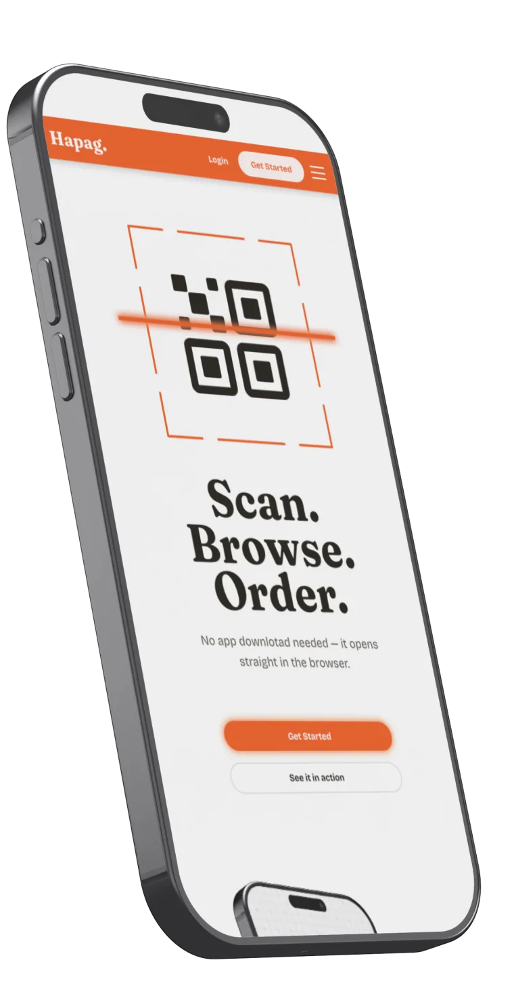
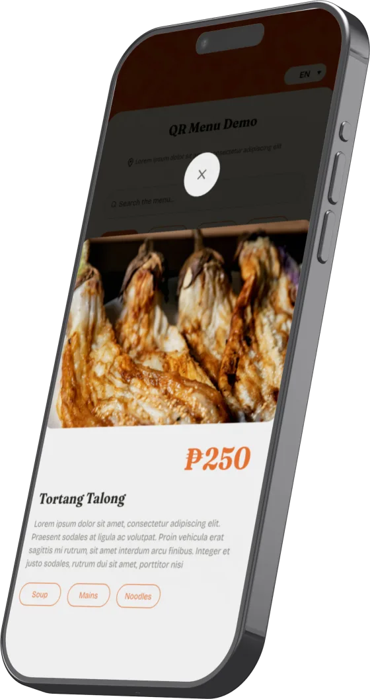
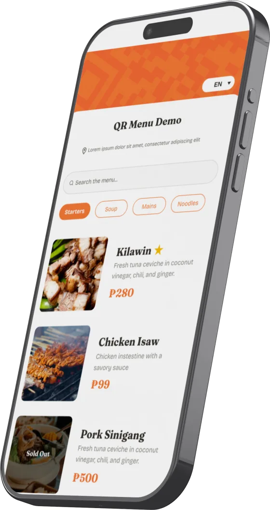

Scan.
Browse.
Order.
No app download needed — it opens straight in the browser.


About Hapag
An instant, app-free QR digital menu for Philippine food businesses. Customers scan, see your full menu on their own phone, and you never reprint for a price change again.
Key Features

For Customers
Scan a QR code, browse a real menu on their own phone: no app to download, no waiting for a printed one.
For Owners
Update prices, mark items sold out, and highlight best sellers in real time, straight from your phone — nothing to reprint when something changes.

For your business
One QR code, generated instantly, downloadable as PNG or PDF for your tables and counter.
Live in three steps
No printing, no waiting on a designer, no developer required.
Register & Confirm
Create your business account and confirm your email.
Add your Menu
Categories, items, prices, and a photo for each dish.
Generate your QR
Instantly on your device — download as PNG or PDF for your tables.
Simple, transparent pricing
Activated after your payment proof is verified: no automatic checkout or card charges.
- Menu builder: categories, items, prices, photos
- Sold-out toggle & best-seller badge
- One QR code, generated instantly
- Menu shown in your source language
Activated after bank transfer / GCash proof is verified, not instant checkout.
- Everything in Standard
- Pin your best sellers to the top
- AI-drafted item descriptions
- Auto-translate: English, Korean, Japanese & Mandarin
- No "Hapag" footer on your menu
Activated after bank transfer / GCash proof is verified, not instant checkout.
Frequently asked questions
What is a QR menu?
A digital menu your customers open by scanning a QR code with their phone's camera. No app to download. Each business gets one QR code, generated on your device, that opens your menu's own link.
How is it different from a printed or PDF menu?
You update prices, mark items sold out, and highlight best sellers instantly from your phone. Nothing to reprint or re-upload when something changes.
Is there a free trial?
Ask us when you register: trial availability is confirmed with your account, not a fixed self-serve period yet.
How long does setup take?
As fast as you can register your account, add your items, categories, and prices, and generate your QR code. The builder itself has no waiting period.
Your menu, live today.
Register, add your items, and generate your QR code — no printing, no waiting on a designer.
Get Started